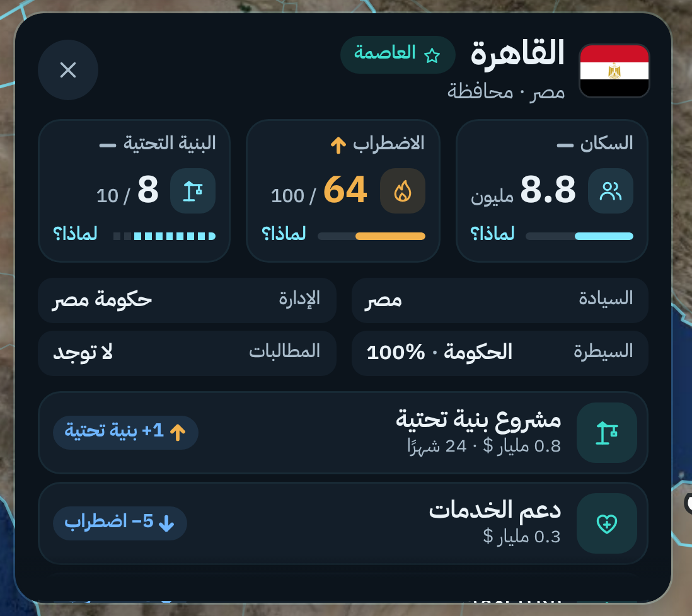
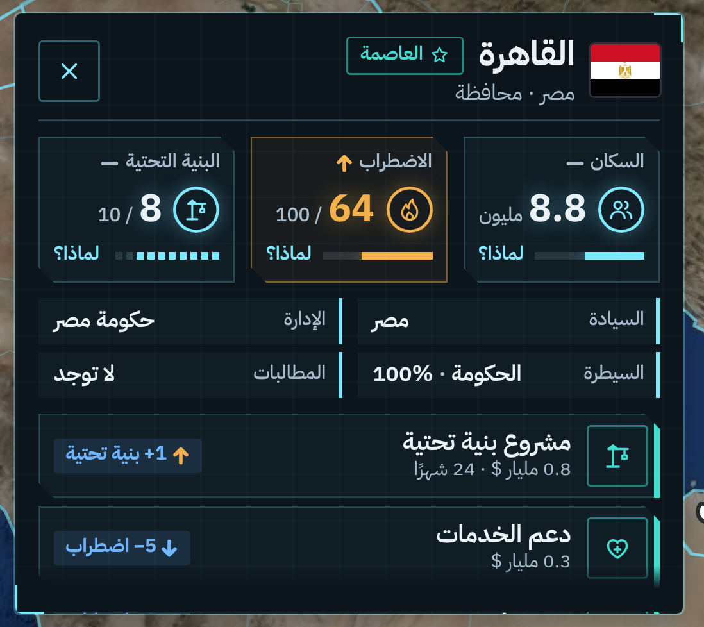
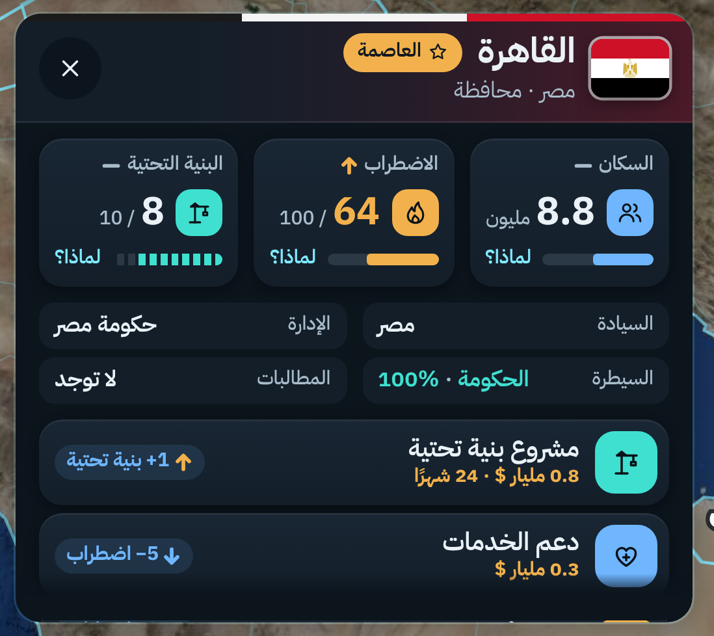

لوحة المحافظة: ثلاث ستايلات عصرية
نفس المحتوى ونفس المكان · على آيفون 17 برو ماكس · اختر الستايل، والترتيب (أ، ب، ج) نختاره بعده
1. حديث ناعمبطاقات بزوايا دائرية، أيقونات ملونة هادئة، أرقام كبيرة وأشرطة
2. غرفة عمليات مستقبليةزوايا مقصوصة، إطارات ودوائر مضيئة، خطوط شبكة خفيفة
3. لعبة استراتيجيةألوان أقوى، أيقونات معبأة، شريط بألوان العلم فوق، الأسعار بالذهبي
على الشاشة كاملة